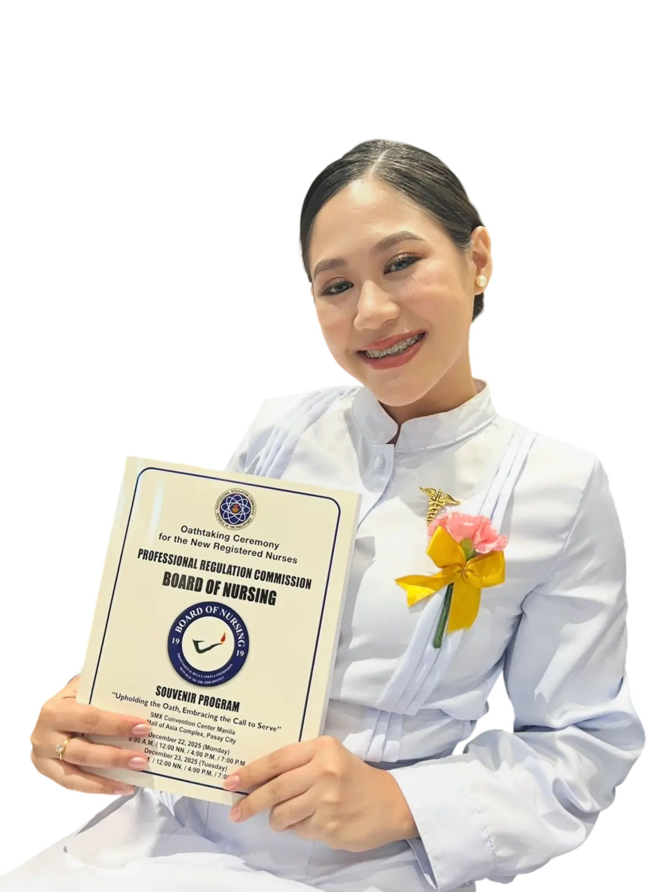
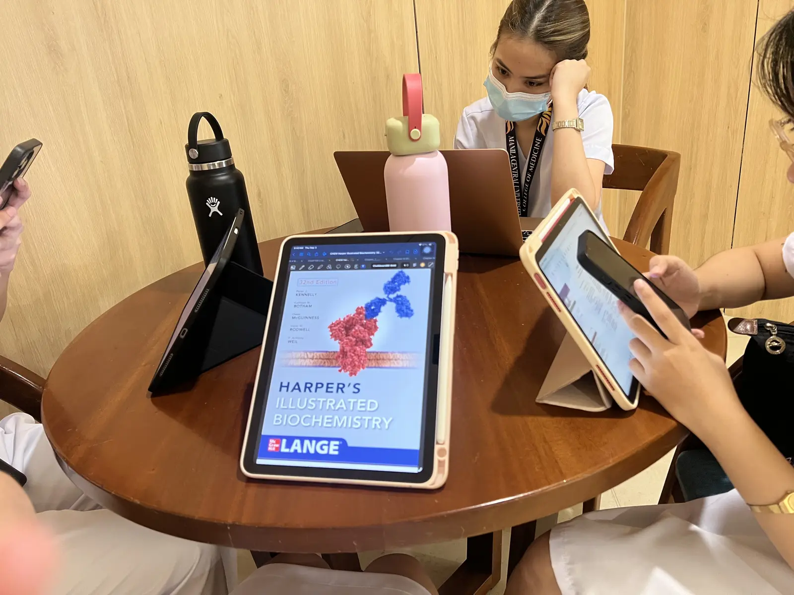
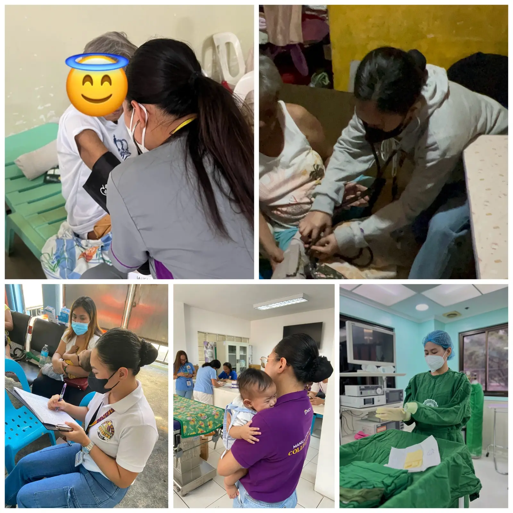
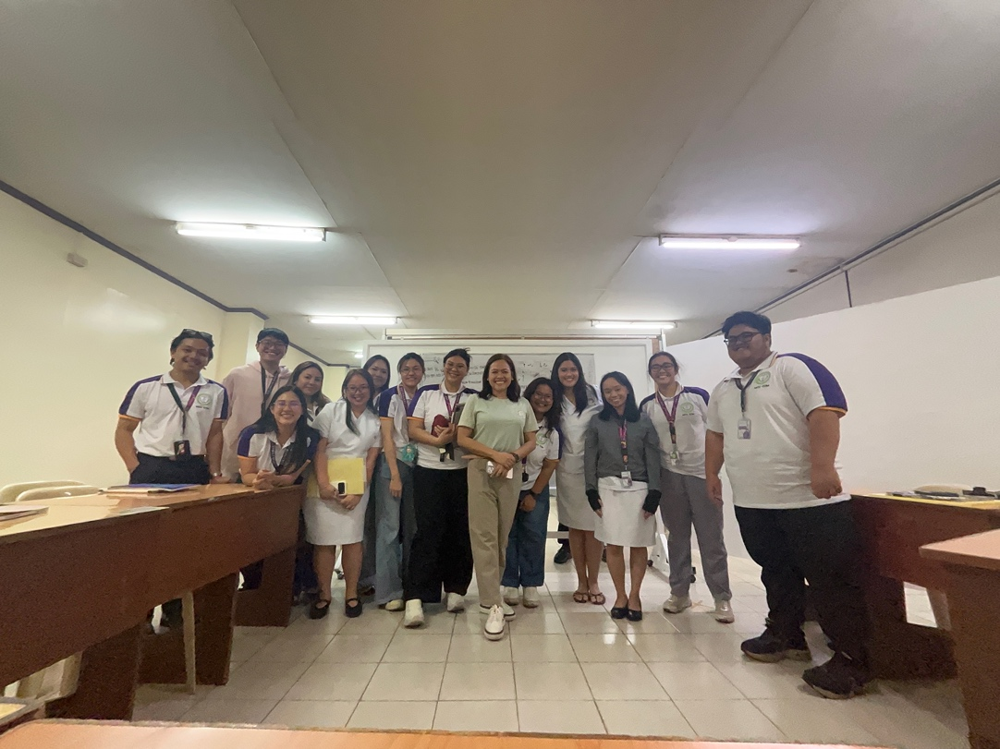
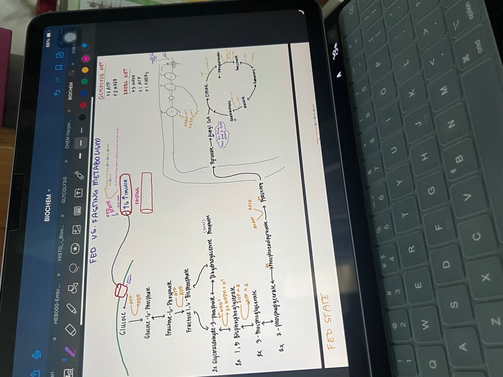

Bachelor of Science in Nursing
Manila Central University

 College of Medicine
College of Medicine
The science behind care
First-Year Medical Student

Choose your chapter
From the foundations of life to the energy that keeps it moving.
Midterms / Energy & metabolism
Fourteen learning entries, from laboratory activities to the pathways that keep us going.
Explore Midterms ↓Profile
I am Ladylourds M. Diokno, a first-year medical student from Valenzuela City and a graduate of the Bachelor of Science in Nursing program.
I completed my undergraduate degree in July 2025 and passed the Philippine Nursing Licensure Examination in November 2025. My transition from nursing to medicine has deepened my appreciation for both patient-centered care and the science that supports every clinical decision.
I am exploring Anesthesiology, Obstetrics and Gynecology, and Otolaryngology while remaining open to where medical training leads me.
Foundation
Manila Central University
Philippine Nursing Licensure Examination
Manila Central University
Teamwork
Communication
Critical thinking
Adaptability
Compassion
Evidence appraisal

Learning in communityPractice and service
My nursing experiences introduced me to patient care, research, and community service. I joined research competitions and volunteered in medical missions in Marikina and Bataan, including serving as a medic during a large community program.
These experiences strengthened my teamwork and critical thinking. More importantly, they showed me that safe healthcare depends on careful decisions, clear communication, and a sincere commitment to the people we serve.
Care in action

Biochemistry journal
Explore my learning, from the first foundations to the pathways that keep us going.
Our first quizzes covered Biochemistry and Medicine, Water, and pH. Although I answered some questions correctly, I knew that my preparation could have been better. The experience revealed gaps in my understanding and showed me that concepts in Biochemistry build on one another.
Rather than viewing the results negatively, I took them as an early reminder to adjust my study habits. I need to study consistently instead of relying on cramming. Moving forward, I want to prepare earlier and improve with every quiz, not simply for a higher score, but because I want to genuinely understand each lesson.
Our first Small Group Discussion made me realize how important it is to look at a patient's condition as a whole instead of focusing on one finding at a time. Even concerns such as vomiting and diarrhea can lead to serious problems when the body's balance is disrupted. I appreciated being able to connect what we learned in class to an actual patient situation.
As a future physician, I need to analyze information carefully rather than immediately assume that I already know the answer. This discussion encouraged me to become more attentive to details and more confident in applying Biochemistry to clinical situations.
This discussion taught me not to settle immediately on the most obvious answer. At first, I associated Henry's case with iron deficiency, but the complete set of findings showed me that I needed to examine the information more carefully before reaching a conclusion.
Biochemistry can help me think more logically when working through clinical cases. Medicine is not simply about remembering the right answer. It also requires understanding the reasoning behind it, a skill I want to continue developing throughout medical school.
My nursing education had already given me experience communicating with patients, but this activity showed me how the skill can continue to grow. We discussed how to ask questions properly, show genuine interest, and respond during a patient interview before practicing in doctor-and-patient roles.
Asking the right questions is not only about gathering information. It is also about helping a patient feel heard and comfortable enough to share important details. Scientific knowledge becomes more meaningful when I can communicate it with confidence, intention, and compassion.
I was already familiar with Labster because we used it during my Nursing undergraduate studies. Seeing it again was familiar, but this time I will be using it to study Biochemistry. Our first meeting was only an orientation, so I am curious to see how the simulations will help clarify topics that are difficult to visualize through lectures alone.
I look forward to discovering whether this interactive approach can make the subject easier to understand and more engaging in our upcoming activities.
I first encountered hemoglobin and myoglobin during nursing school, but revisiting them in Biochemistry deepened my understanding of their structures, chemical properties, and physiological roles. I began to see how molecular structure enables each protein to perform a distinct function in the body.
I was happy with my quiz performance because I was able to apply what I had learned. Still, a good score does not mean I have mastered the topic. I need to keep reviewing until I can explain why an answer is correct and connect that understanding to clinical situations.
The day before our prelim examination, we attended an online class from around 5:00 PM until 11:00 PM. I was genuinely grateful to Doc A for continuing to guide us late into the evening and for giving us the opportunity to clarify and review important lessons.
The session also made me realize that I had not given myself enough time to review everything properly. Biochemistry contains too many connected concepts to learn all at once. I want to prepare earlier, manage my time better, and study gradually. This is not only preparation for one examination, but an important lesson in the consistency, discipline, and long-term understanding that medicine requires.
Biochemistry has been one of the challenging parts of my transition from Nursing to Medicine. Although I already had a background in the health sciences, medical school has required me to understand concepts more deeply instead of relying only on what I already know.
Throughout the prelim period, some topics came easily while others required more time and effort. My quizzes and activities showed me that I need to avoid cramming and allow enough time for review. They also taught me that struggling with a lesson does not mean I cannot understand it. Sometimes, I simply need to return to the topic, review it again, and be patient with myself.
This period has encouraged me to become more consistent in my studies and appreciate the science behind the human body. I know that every concept I learn now will become part of my foundation as a future physician. Every difficult lesson is part of becoming a better physician.
Welcome to my Biochemistry journey for the midterm period! These past weeks have been filled with new lessons, challenging topics, group discussions, and lots of reviewing. Honestly, Biochemistry can be overwhelming at times, but I’m doing my best to understand each topic and keep up with the lessons. This portfolio contains my activities, learnings, and experiences throughout the journey. Here’s to learning, improving, and surviving Biochemistry one topic at a time! <3
Making our G6PD infographic was a fun way to review the topic while working with my groupmates. One of the challenges was deciding how to present the information clearly without putting too much text in the design. While making it, I also appreciated learning more about how G6PD helps protect red blood cells from damage. It was nice to have an activity where we could be creative while reviewing an important Biochemistry topic. At least this time, our notes came with a design!
At first, the spectrophotometer looked like one of those laboratory machines that I would be scared to touch without supervision. Thankfully, Group 1 made the discussion interactive, so understanding its parts and functions became easier. I learned that even small things, like choosing the right wavelength and making sure the cuvette is clean, can affect the results. I also did well on the quiz, which made me happy because at least my brain decided to cooperate that day. hahaha It was a nice reminder that when a topic is explained in a way that makes sense, learning becomes less intimidating.
Preparing for our group report was a little challenging at first because the Beer-Lambert Law seemed confusing. But as my groupmates and I studied and discussed it, things slowly started to make sense. Reporting it in a conversational and interactive way made the experience more enjoyable, and it was nice that we were learning together instead of simply memorizing everything. I learned that absorbance can help us estimate the concentration of a substance and even monitor a biochemical reaction. Who knew light could be this useful? hahaha This activity taught me that sometimes, the best way to understand something is to try explaining it to other people.
I used to think of ATP as just another term I had to memorize for an exam, but learning about it made me realize how important it really is. Imagine, even our cells need their own source of energy to keep everything running! I found it interesting that the body does not simply use the energy from food directly for every activity. It has to convert and transfer that energy into a usable form. It made me appreciate how much work happens inside our bodies without us even noticing. Honestly, our cells are busy 24/7, and they don't even get a day off! haha
This chapter made me realize that getting energy from food is much more complicated than I imagined. I used to think that eating was simply about giving our bodies nutrients, but there is actually a whole process happening inside our cells to release that energy. What amazed me was that the body has to handle this energy carefully instead of just letting it go to waste. It made me look at something as ordinary as eating rice a little differently. Hahaha Who knew that something we eat every day goes through so many biochemical processes just to help keep us going?
I have heard so many times that mitochondria are the powerhouse of the cell, but this chapter helped me understand why people keep saying that. Learning how electrons move through the respiratory chain and how this helps produce ATP was honestly fascinating. I was amazed that the cell can use this process to generate so much of the energy it needs. It also made me realize that oxygen has a much bigger role than just helping us breathe. There is a whole process happening inside our cells that we cannot see, yet our bodies depend on it every day. Doc, the mitochondria really do have a full-time job!
This chapter made me realize that our bodies are actually very resourceful when it comes to energy. I found it interesting that the body can use different fuels depending on what is available and what it needs. It is not just about eating and immediately using everything we consume. Our bodies also store energy and know when to use those reserves. It reminded me that metabolism is happening all the time, even when we are sleeping or doing absolutely nothing. HAHAHA! Imagine resting while your body is still working behind the scenes to keep everything running.
When I first saw the citric acid cycle, I honestly thought, “How am I supposed to remember all these names and steps?” hahaha But as we discussed it, I started to appreciate how each step contributes to the bigger picture. What amazed me was that the cycle does more than just break things down; it also produces electron carriers that help the body generate ATP. I realized that even if the pathway looks complicated on paper, every step has a purpose. I may still need to review the intermediates a few more times, but at least I now understand why this cycle matters instead of memorizing it blindly.
Glycolysis made me realize that even one glucose molecule has a whole journey ahead of it inside the cell. What I found interesting was that the process actually uses some ATP before producing more ATP later. At first, that seemed a little funny to me. Imagine spending energy before you can earn some back! But it helped me understand that the body sometimes has to invest energy to make energy. I also liked learning that glucose can be broken down through a series of steps instead of everything happening all at once. Now, whenever I hear the word glucose, I remember that it has more responsibilities than simply being called sugar.
Before discussing this chapter, I mostly associated carbohydrates with rice, bread, and the usual question of whether we had eaten enough. hahaha Learning about their different forms and functions made me realize that carbohydrates are more important than I initially thought. They do not only provide energy; some also play structural and other important roles in the body. I found it interesting that something as familiar as the food on our plates connects to so many processes happening inside us. This chapter reminded me that even the simplest things we encounter every day can have a much bigger role in biochemistry than we expect.
I found glycogen metabolism interesting because it made me think of glycogen as the body's stored supply of glucose for when it needs energy. Instead of depending only on the food we have just eaten, the body can keep some glucose stored and use it when necessary. I was especially interested in how the liver and muscles have different roles in this process. It made me realize that the body prepares ahead instead of simply waiting until we need energy. Honestly, our bodies are more organized than I am during exam week. hahaha At least the body has a storage system, while I sometimes struggle to remember where I put my notes.
These two pathways showed me that the body has more than one way to handle its biochemical needs. I found gluconeogenesis interesting because the body can make glucose from certain non-carbohydrate sources when needed. Meanwhile, the pentose phosphate pathway helped me appreciate that glucose is not only useful for making ATP. It can also contribute to producing NADPH and ribose-5-phosphate, which are important for other cellular functions. I liked realizing that the same starting molecule can be involved in different pathways depending on what the body needs. It is like the body has different plans for the same resource. hahahaThe more we study biochemistry, the more I realize that our cells are surprisingly good at multitasking.

Our small group discussion about carbon monoxide turned out to be really fun! The discussion went smoothly, and everyone was able to share their ideas, which made the topic easier to understand. I found it interesting how carbon monoxide can affect the body by interfering with oxygen transport, even though a person may not immediately realize how dangerous the exposure is. It was a nice experience because we were learning from one another without making the discussion feel too serious or stressful. Moments like this remind me that studying medicine is not always about memorizing pages of notes; sometimes, understanding a topic becomes easier when you get to discuss it with your classmates.

Reviewing Biochemistry has definitely been a process of trying to connect one topic to another. With so many pathways and concepts to remember, I sometimes have to go over my notes more than once before everything starts to make sense. Using my iPad helps me keep my materials organized and makes it easier to revisit the topics discussed in class. I am still working on improving my study habits, especially when lessons become overwhelming, but I am trying my best to understand the concepts instead of simply memorizing them for exams. There is still a lot to learn, but little by little, I am getting there. <3
Closing reflection
Biochemistry has been one of the defining challenges in my transition from nursing to medicine. It pushed me to understand the human body beyond what I already knew and taught me the value of perseverance and continuous learning.
As I continue this journey, I hope to carry Biochemistry as a foundation for becoming a knowledgeable, compassionate physician who serves others with both scientific understanding and genuine care.
Midterms / Closing reflection
To be honest, Biochemistry has not been an easy subject for me. There are times when I find the topics difficult to understand, especially when so many processes, terms, and pathways have to be remembered and connected with one another. Sometimes, I feel overwhelmed, and I know that I still have a lot to improve. But even with these struggles, I am doing my best to keep up, study harder, and find ways to understand the lessons instead of just memorizing them for an exam.
Throughout our discussions, I have learned that the processes happening inside our bodies are much more complicated and fascinating than I used to think. From how our cells produce energy to how our bodies store and use glucose, each topic has helped me appreciate the importance of Biochemistry in medicine. I may not understand everything right away, and there are still lessons that I need to review more than once, but I am slowly learning to be more patient with myself.
As a nursing graduate who is now pursuing medicine, I know that learning these concepts is an important part of building my foundation as a future physician. I want to understand not only what happens inside the body but also why it happens and how it relates to the patients I may encounter in the future. I know I still have a long way to go, but I am willing to put in the effort and learn from my mistakes. My goal is to pass Biochemistry, of course, but more than that, I want to carry what I learn into my future medical practice. I may struggle along the way, but I will keep doing my best, one topic at a time.
Contact